Domotique
Domotisation de mon habitation• 2020 - aujourd'hui
Objectifs: Automatiser l'habitation en utilisant une solution universelle, modulable, gratuite et open-source| Avantages | Inconvénients |
|---|---|
|
|
Installations d'appareils ZigBee de différentes marques
- Valves thermostatiques TuYa
- Lumières YSRSAI
- Capteurs température/humidité Xiaomi
- Capteurs de présence Xiaomi
- Capteurs de portes/fenetre Xiaomi
- ...
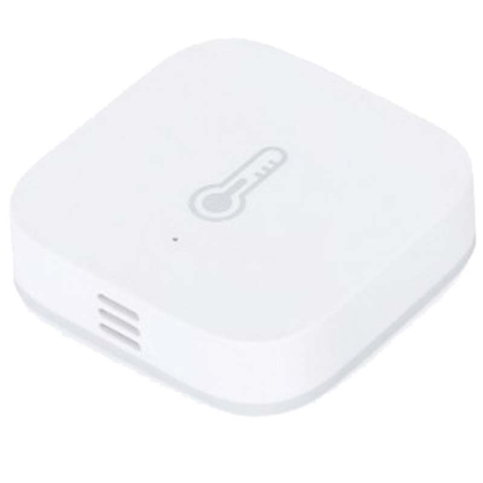
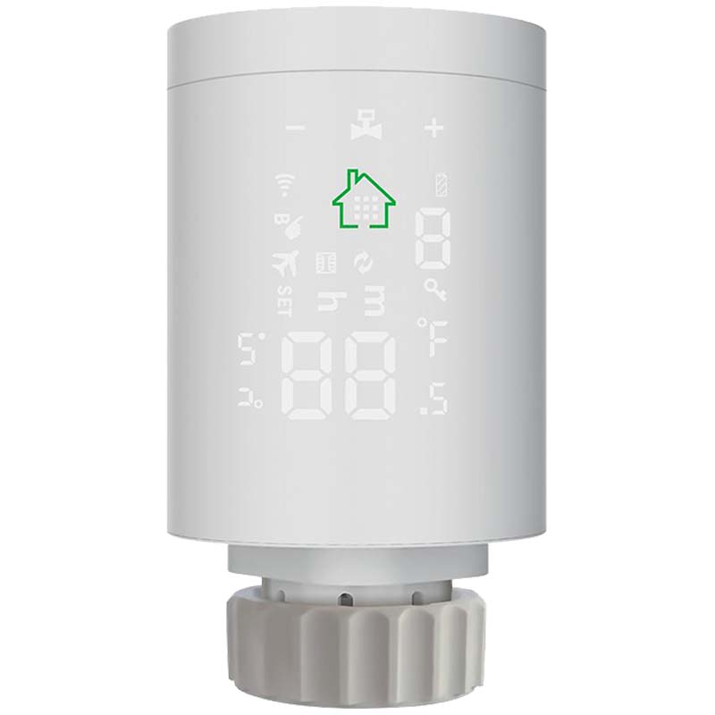
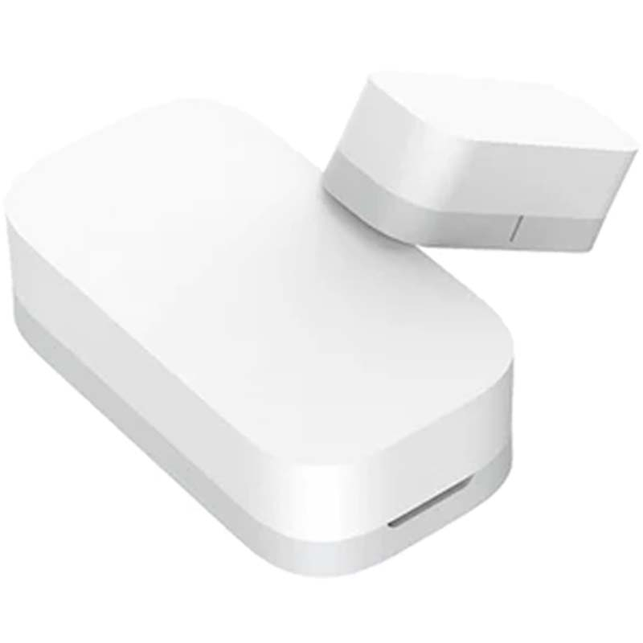
Installations d'appareils Wi-Fi
- ESP8266 + relais 220V
- ESP32 + PN532 (lecteur RFID)
- Arduino nano + LED IR (pour simulation de télécommande IR)
- ESP32 + HTU21D (capteur température/humidité) + CCS811 (capteur CO2)
- ...
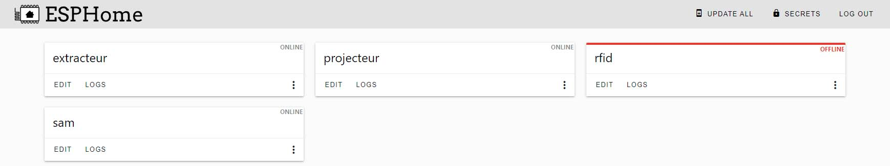
Installation du module sniffer de réseau Zigbee sur les GPIO du Raspberry Pi
Difficultés rencontrées :
- Mapper "/dev/ttyAMA0" vers le docker Zigbee2MQTT
- Paramétrer le baudrate de la PiZigate à 115200 (modification firmware)
- Passer la PiZigate en mode production en modifiant la valeur des GPIO 0 et 2
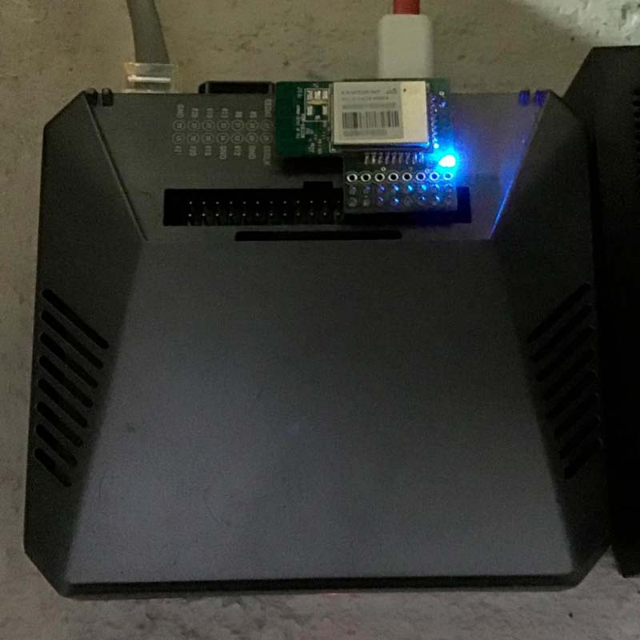
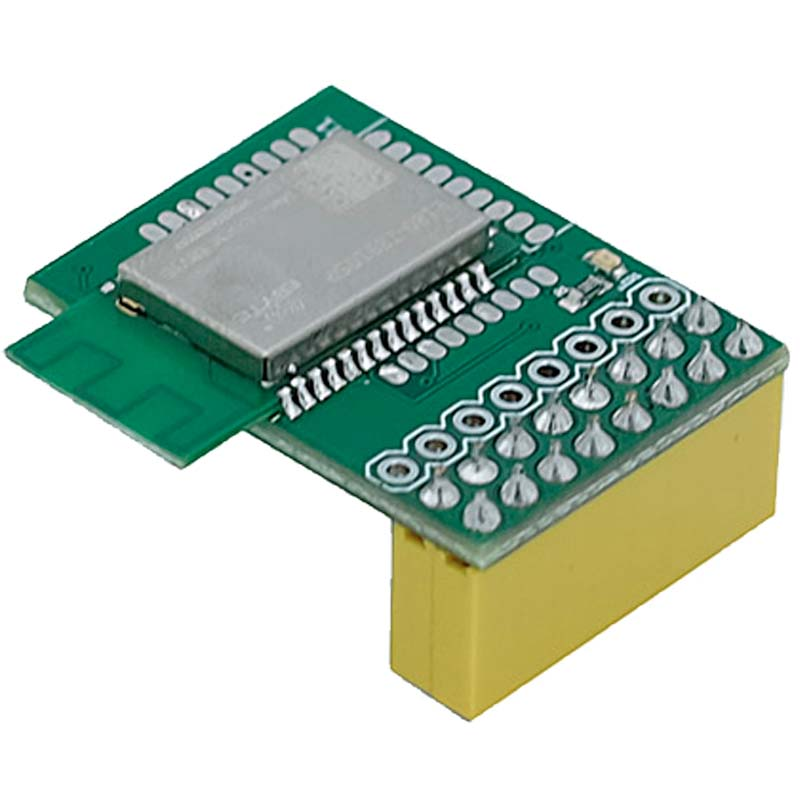
Conversion des data brutes en MQTT avec Zigbee2MQTT
Liste des appareils compatibles :
https://www.zigbee2mqtt.io/supported-devices/
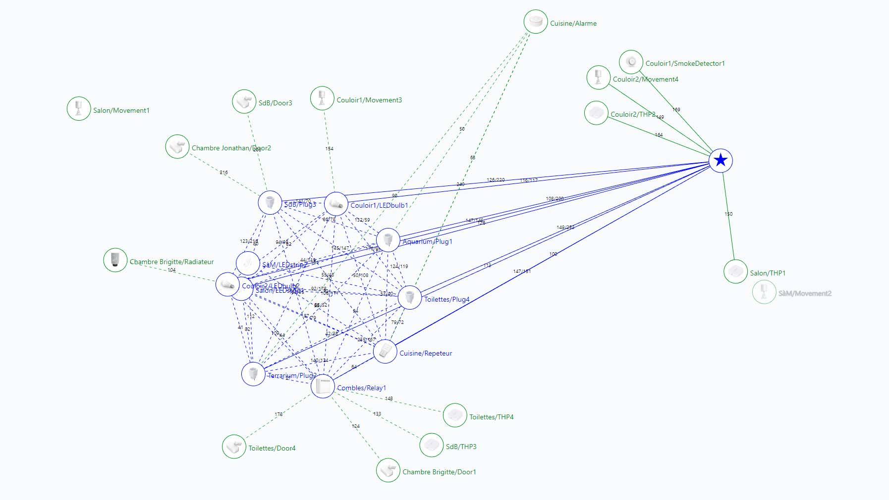
Intégration à Home assistant
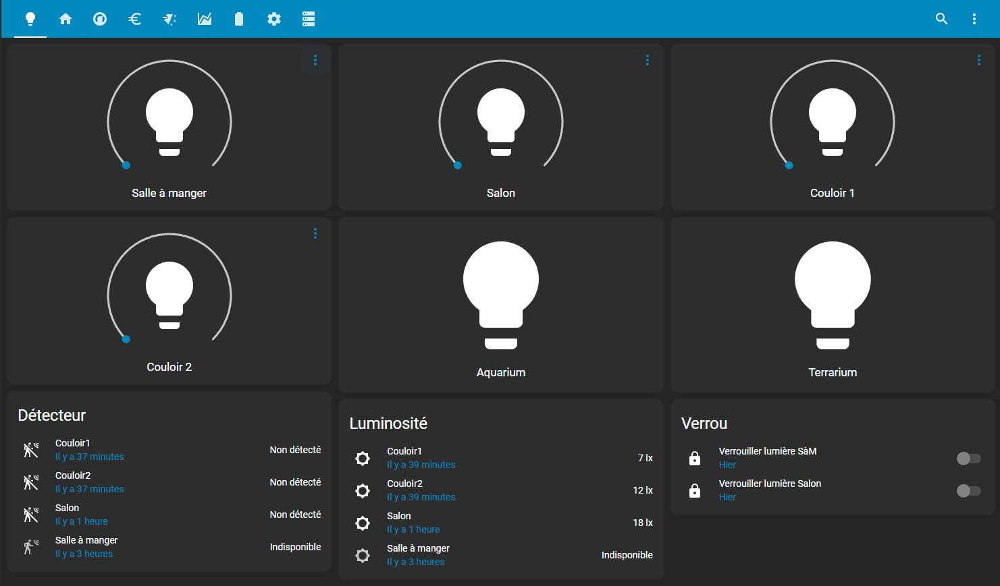
Stockage des données dans InfluxDB + Dashboard Grafana
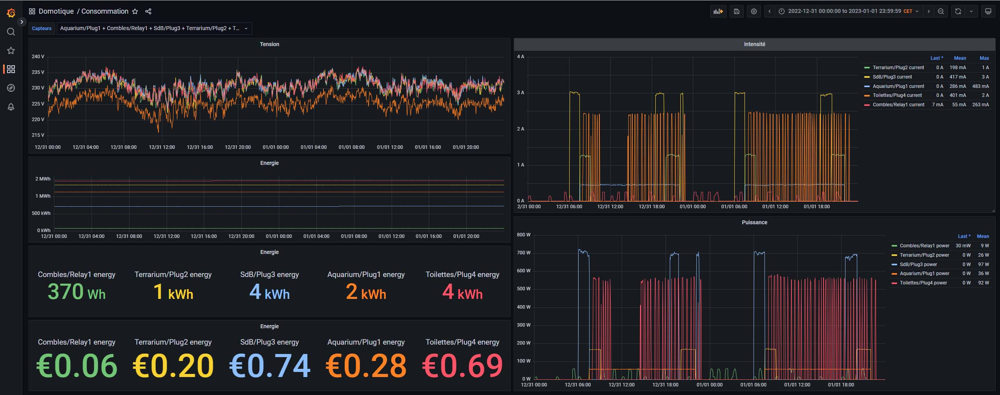
http://grafana.neptune79.duckdns.org/d/1DjY9Y5Vk/temperature
http://grafana.neptune79.duckdns.org/d/BvgPZmGVz/consommation
Utilisation de NodeRed pour automatiser des tâches
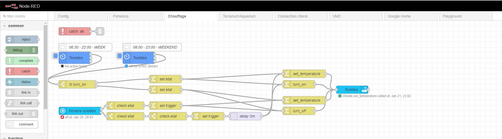
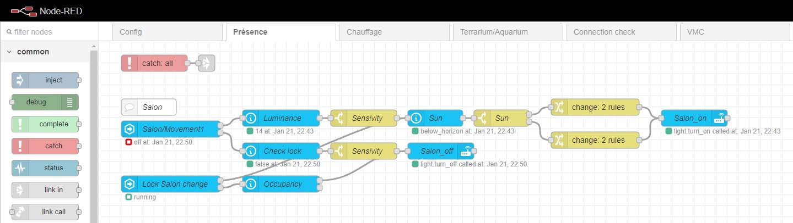
Gestion des dockers avec Portainer
Les logiciels précédemment mentionnés sont tous installés dans des conteneurs Docker sur mon serveur. Afin d'obtenir une visualisation efficace et de gérer les sauvegardes sans avoir à utiliser une connexion SSH, j'utilise Portainer comme outil de gestion.
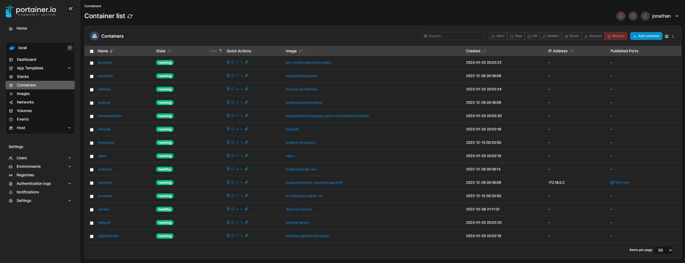
Accès VPN et SAMBA
J'ai mis en place un serveur SAMBA pour faciliter l'accès aux fichiers sur mon serveur. Pour des raisons de sécurité, j'ai limité l'utilisation de ce protocole au sein du réseau local. En outre, j'ai installé un serveur VPN pour protéger les connexions et établir un tunnel sécurisé entre mon serveur et mes clients.
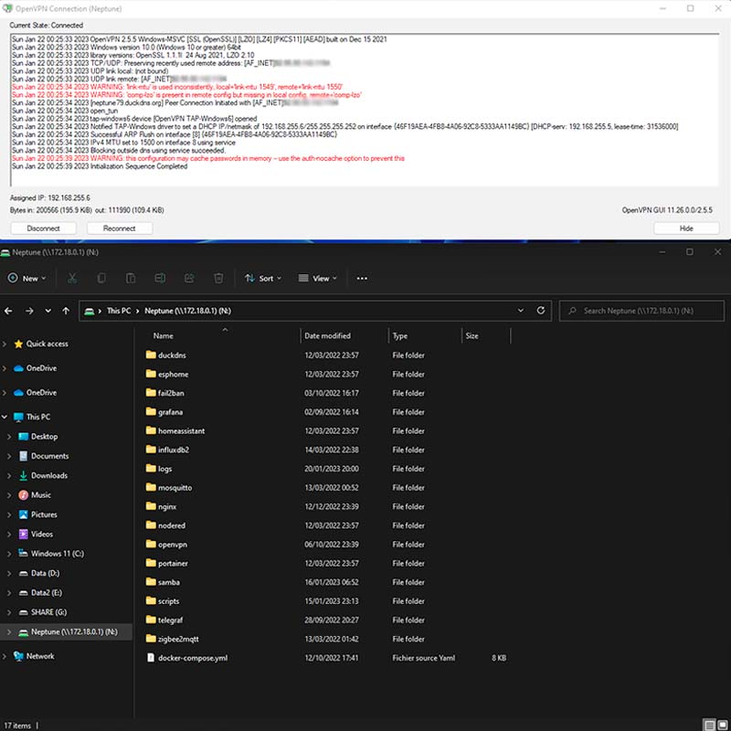
Protection du serveur avec Fail2Ban
En raison de l'ouverture du port 22 sur mon routeur pour SSH, j'ai choisi d'installer un module appelé "Fail2Ban" afin de protéger mon système en bloquant les adresses IP qui tentent de se connecter de manière erronée de façon excessive.
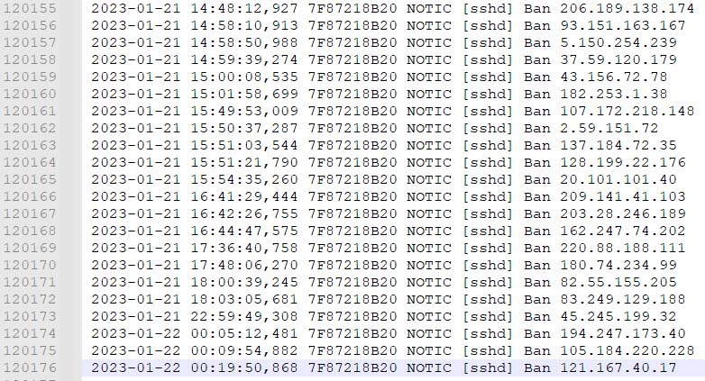
Personnalisation avec NGINX et DuckDNS
J'ai choisi d'utiliser un nom de domaine gratuit "neptune79.duckdns.org" ainsi que NGINX en tant que reverse proxy pour limiter l'ouverture du port 80 de mon routeur et personnaliser mes URL.
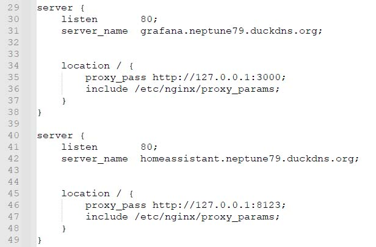